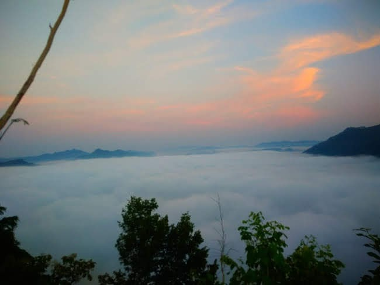

Selamat datang di Website Saya.... , Ini adalah Proyek UAS Teknologi CLoud. Saya merupakan mahasiswi di salah satu perguruan tinggi swasta di Yogyakarta yaitu STMIK AKAKOM YOGYAKARTA. Saya adalah mahasiswi angkatan 2018 . Baca lebih lengkap tentang kampus kami di link dibawah ini:
http://akakom.ac.id Follow Us:
10 Tempat Wisata Yang Harus DiKunjungi Kalau Ke Kota Kebumen
1. Pantai Menganti
Pantai ini tergolong objek wisata yang masih baru karena resmi dibuka untuk umum sekitar tahun 2011. Letaknya berada di sepanjang pantai selatan yang memiliki ombak cukup bagus sehingga sangat cocok digunakan sebagai tempat surfing.
Selain itu, ada hal lain yang menjadi daya tarik Pantai Menganti yaitu hamparan pasir putih yang berpadu dengan birunya air laut. Semua itu berpadu indah dengan tebing yang tinggi dan bukit yang menghijau sehingga begitu memanjakan mata.
Anda juga dapat menemui tebing raksasa di bagian barat Pantai Menganti. Orang biasa menyebutnya dengan nama Tebing Bidadari. Di sana, mata Anda akan semakin dimanjakan oleh indahnya pahatan alam berupa 4 curug yang berketinggian lebih dari 30 meter.
Anda pun bisa melihat keindahan pemandangan pantai dari ketinggian melalui puncak mercusuar. Tinggi mercusuar ini kurang lebih 20 meter. Tempat ini adalah spot yang paling pas untuk menikmati sunset ataupun sunrise yang sempurna. Suasana akan bertambah syahdu dan indah dengan burung yang beterbangan.
2. Bukit Pentulu Indah
Bukit Pentulu Indah adalah merupakan salah satu destinasi tempat wisata Kebumen yang indah yang patut untuk kamu jadikan salah satu daftar referensi liburan kamu di Kebuman.
Bukit wisata Pentulu Indah Kebumen ini menyuguhkan berupa keindahan alam yang begitu memanjakan mata.
Deretan pohon pinus yang menjulang tinggi, udara yang sejuk dan masih asri membuat kamu akan merasa nyaman dan tenang berada di tempat ini.
Salah satu obyek wisata kebumen terbaru ini tidak hanya menyuguhkan pemandangan alam yang indah tetapi dari bukit pentulu indah kebumen ini kamu juga dapat menikmati indahnya sinar mentari pagi dari ufuk timur yang begitu mempesona.
3. Goa Superman Big Sister

Superman Big Sister adalah sebuah air terjun setinggi puluhan meter di dalam gua. Untuk mencapainya, kamu butuh sekurangnya lima jam perjalanan menyusuri perut gua. Ini tentu bukan perkara mudah. Kamu sangat disarankan untuk memakai peralatan khusus saat memasuki gua, misalnya baju coverall dan rompi pelampung.
4. Bukit Pranji
Wisata Bukit Pranji di Pejagoan Kebumen Jawa Tengah adalah salah satu tempat wisata yang berada di Desa Watulawang dan Desa Pengaringan, Kecamatan Pejagoan, Kabupaten Kebumen, Jawa Tengah, Indonesia. Wisata Bukit Pranji di Pejagoan Kebumen Jawa Tengah adalah tempat wisata yang ramai dengan wisatawan pada hari biasa maupun hari liburan. Tempat ini sangat indah dan bisa memberikan sensasi yang berbeda dengan aktivitas kita sehari hari.
terletak i Desa Watulawang dan Desa Pengaringan, Kecamatan Pejagoan, Kabupaten Kebumen, Jawa Tengah, Indonesia. Tetapi jika anda masih bingung di mana lokasi atau letak Wisata Bukit Pranji di Pejagoan Kebumen Jawa Tengah saya sarankan anda mencari dengan mengetik Wisata Bukit Pranji di Pejagoan Kebumen Jawa Tengah di search google maps saja. Di Google maps sudah tertandai dimana lokasi yang anda cari tersebut.
5. Waduk Sempor
Waduk Sempor merupakan bendungan pada daerah Sungai Cincingguling atau disebut juga Sungai Sempor yang mengalir dari timur laut ke selatan di Kaki Gunung Serayu Selatan dan bermuara di Samudra Hindia. Waduk Sempor terletak 8 km disebelah utara kota Gombong. Waduk Sempor berada di ketinggian kurang lebih 30 meter di atas permukaan air laut. Waduk ini dibangun untuk membantu pengairan sawah yang ada di Kebumen, Banyumas, dan Cilacap.
Sejauh mata memandang, terlihat hamparan perairan yang cukup luas di waduk itu. Plus perbukitan yang masih asri oleh hutan cemara. Rimbunnya pepohonan itu terefleksikan di air waduk yang berwarna hijau. Selain daya tarik alamnya yang begitu besar, obyek wisata ini juga dilengkapi dengan berbagai sarana pendukung, antara lain wisma-wisma penginapan yang bisa disewa secara perorangan maupun rombongan. Tempat ini juga cocok dijadikan tempat untuk seminar, rapat kejra dan kegiatan lainnya, karena selain tempatnya tenang, juga memiliki sarana yang memadai untuk kegiatan tersebut.
aduk ini sangat cantik, dan punya beberapa fasilitas wisata. Anda bisa mengarungi waduk dengan perahu motor bisa jadi pilihan. Per orangnya dikenakan biaya Rp 10.000. Bisa pula menyewa satu perahu berkapasitas 10 orang seharga Rp 100.000. Perahu akan membawa Anda mengelilingi waduk selama 30 menit. Atau Anda berfoto ria, dan sekadar melepas lelah dengan berteduh di bawah pohon rindang. Tiket masuknya sangat murah, Rp 4.500 saja per orang.
6. Bukit Banda

Bukit Merese yang berada di Lombok tengah tepatnya di samping barat pentulu atau kalau dari pantai Kuta berada disisi timurnya.View yang di sajikan benar2 menakjubkan di mana bila naik ke atas bukit terlihat gradasi air laut yang bening biru kehijauan bahkan meski langit gelap sekalipun. Bisa di tempuh dari kota Mataram sekitar 1,5 jam atau dari bandara Lombok kurang satu jam saja.
Di Bukit Merese, Anda dapat melihat kecantikanTanjung Aa'n secara maksimal. Selain lautan biru dan perbukitan hijau, Anda pun bisa melihat sunset yang sangat cantik di sini! Terlihat dari atas bukit gradasi air laut dari hijau tosca ke biru gelap, menandakan laut di sana jauh lebih dalam. Di sisi yang lain, terlihat pantai yang landai dengan air jernih bak cermin. Terlihat beberapa wisatawan yang duduk bersantai di gazebo menikmati teriknya matahari.
Dari Bukit Merese kamu bisa melihat pemandangan Tanjung Aan, menikmati selurih keindahan yang tersaji di sini. Bukit-bukit berjajar membentuk layer sederhana, berbalut warna hijau yang berasal dari rumput-rumput yang tumbuh liar di setiap jengkal tanahnya.
Beberapa pengembala terlihat asik menggembalakan sapi maupun kerbau di bukit ini. Juga Batu Payung yang menjadi landmark tak kalah indahnya dinikmatid dari atas bukit.

7. Gading Splash Water Kebumen
Pemandangan pada kolam renang utama di Gading Splash Water Kebumen dengan keempat sudutnya yang berbentuk melengkung. Di sebelah kiri kolam renang terdapat sebuah panggung kecil yang sepertinya bisa dipakai untuk berhalo-halo bagi MC jika ada acara permainan kelompok atau lomba. Bisa juga untuk bermain musik atau pentas tari-tarian.
Di ujung sana terdapat arena bermain bagi anak-anak, dengan ayunan, dan sejumlah permainan lainnya. Gading Splash Water Kebumen juga tampak menyediakan ban-ban angin yang bisa dipakai atau disewa oleh anak-anak atau pun remaja yang masih belum pandai berenang agar tetap bisa mengapung dan bermain di dalam kolam.
Mengelola tempat pemandian seperti Gading Splash Water ini memang perlu kreativitas dan harus selalu melakukan inovasi untuk menarik pengunjung baru dan mempertahankan yang lama. Selain bersaing dengan sesama kolam renang, termasuk yang ada di hotel-hotel, persaingan memperebutkan pengunjung juga terjadi dengan tempat wisata dan hiburan lainnya.
Ujung area Gading Splash Water dipergunakan bagi kolam renang dangkal untuk balita yang dipisahkan oleh tembok tipis dengan kolam agak lebih dalam di sebelahnya yang diperuntukkan bagi anak-anak remaja tanggung dan menjadi ujung akhir permainan luncuran air. Orang tentu perlu mengawasi anak balitanya dengan ketat jika bermain air di sana.
Alamat : Jl Raya Soka, No. 17, Pejagoan, Kebumen. Lokasi GPS : Google Maps, Waze. Harga tiket masuk : Rp. 9.000 usia 3 tahun ke atas Senin s/d Jumat. Parkir sepeda Rp. 500, sepeda motor Rp. 1000, mobil pribadi Rp, 1500, mobil umum Rp. 2000
8. Kampung Etnik
Tak perlu pergi jauh untuk bisa berwisata bersama keluarga. Saat ini telah ada wisata bernama Kampoeng Etnik yang berlokasi di Desa Legok Kecamatan Pejagoan. Wisata bernuansa rumah bungalow itu cocok untuk anak - anak dan keluarga.
Keberadaan bungalow menjadi ciri khas obwis yang berada di Dusun Legok RT 01 RW 06 Desa/Kecamatan Pejagoan tersebut. Lokasinya mudab dijangkau, karena hanya berjarak sekitar 1,9 km dari alun-alun Kebumen, masuk Jl Ronggowarsito dan berbelok ke Selatan, persisnya di sebelah timur Perumahan Pejagoan Indah (PPI). Owners Kampung Etnik Pejagoan, DR H K Prihartono AH Drs, S Sos, SKom MM, mengatakan wisata Kampoeng Etnik menawarkan suasana pedesaan yang tenang dan asri dengan 15 wahana wisata.
9. Pantai Sawangan
Berada di daerah pesesir dan berbatasan langsung dengan samudera Hindia, menjadikan Kabupaten Kebumen sebagai daerah yang mempunyai banyak sekali potensi wisata pantai. Bukan hanya sekadar pantai pada umumnya, di bagian barat daya Kabupaten Kebumen pantai-pantai yang indah berpadu dengan area pegunungan karst sehingga lebih menarik. Salah satunya adalah Pantai Sawangan yang berada di Desa Karangduwur, Kec. Ayah, Kab. Kebumen Jawa Tengah. Pantai ini menyuguhkan lukisan alam yang sangat indah dengan landscape samudera hindia dan tebing-tebing kapur alami. Kesegaran udara sangat terasa karena banyak pepohonan tumbuh menghiasi eloknya pantai. Sensasi sunrise sangat menarik untuk dinikmati kala senja tiba, dengan kilauan sinar keemasan memantul dari luasnya perairan samudera hindia.
Bukan hanya keindahan pantai lait selatan saja yang bisa kita nikmati saat berkunjung di pantai sawangan. Di atas bukit, kita dapat menikmati hijaunya rumput dan pepohonan dengan udara yang sejuk ditemani angin sepoy-sepoy yang berhembus manja. Burung-burung dan aneka satwa alam juga masih eksis di habitatnya, karena lokasi ini juga masih sangat nyaman bagi ekosistem mereka. Tidak seperti kebanyakan pantai pada umumnya yang didominasi oleh hamparan pasir, pantai sawangan lebih didominasi oleh batuan karang yang kokoh di tepian laut. Karang-karang dengan bentuk yang bermacam-macam laksana ornamen indah penghias pantai sawangan. Karang-karang tersebut juga mempunyai beragam ukuran, yang seolah dengan sigap untuk menghalau ombak laut selatan yang datang. Sangat menarik untuk wonderfuller pertimbangkan sebagai tujuan liburan di hari libur. Untuk menuju lokasi sama dengan rute air terjun sawangan, yakni melalui jalur pegunungan dari pantai Logending ke arah timur.
10. Benteng Van de wick
Gombong terletak sekitar 4 kilometer dari Kebumen dan benteng Benteng Van Der Wijck bisa ditemukan di sini. Jika teman-teman mengunjunginya Kebumen, teman-teman cukup naik kendaraan umum atau pun kendaraa pribadi.
Benteng ini termasuk salah satu tempat wisata sejarah yang menarik di Gombong, meski tidak banyak yang mengetahui keberadaannya, lo!
Benteng Van Der Wijck didirikan pada tahun 1818 oleh Jenderal Van den Bosh. Dulunya, ini hanya kantor VOC, sebuah kongsi perdagangan milik Belanda.
Kemudian Benteng Van Der Wijck diubah fungsinya sebagai benteng pertahanan ketika Belanda berperang melawan masyarakat Yogyakarta.